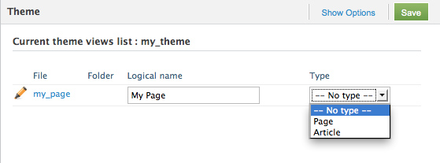

Introduction to Views
Views are a part of the website theme. They will be used by the website to display the content.
Views are located in the folder: /themes/your_theme/views/.
A view has the .php extension.
Views and Tags
A view displays the website content through tags. We can also say that tags are used in views to display content from the database.
Tags are coded in libraries called "Tag Managers". You will certainly not need to edit these libraries, but if you wish to know more about tags, like how to create your own tags, have a look at the "Libraries Reference".
Pages and articles are displayed according to their defined views. In a view, some tags can use other views to display data.
Kind of views
They are 3 kind of views :
| View type | Description |
|---|---|
| Page views |
Linked to one page through Ionize. Used to display all pages elements :
|
| Article views |
Linked to one article or to the "Article's views" of one page. Used to display all articles fields. |
| Partial views |
These views are used as partial block in other views, for repeating content. For example, if the header of the website is always the same, you will create an "header.php" view and include it in a page view. |
Activate pages and articles views
Pages and Articles views need to be activated in order to use them in the Page and Article panels of Ionize (to link these views to pages or articles).
In Ionize, go to : Settings > Themes...

This panel shows the views PHP files.
For each view, you can enter a logical name, which will be in the view list of the page edition panel, and set the type ("article" or "page").